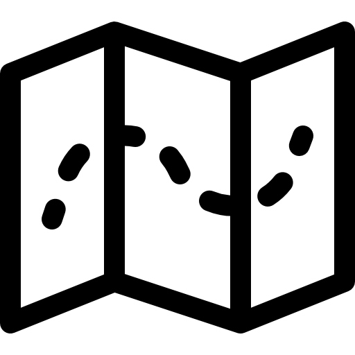

- 강현우
- 1988년생
- 남
 sagekhw@naver.com
sagekhw@naver.com 010-4668-2003
010-4668-2003-  서울 경기 부산 울산 등
 정규직, 프리랜서
정규직, 프리랜서
언어
| 종류 | 내용 |
|---|---|
| 오픈소스 | Bitmex api, zabbix, logstash, kibana, grafana |
| Cloud | AWS : EC2, Route53, Certificate manager, ELB, S3, Lambda, IAM, Api Gateway, VPC, Cloud Front |
| Devops | Docker: docker hub에서 apache image로 web front 설정 및 사용 http://moze.sagekhw.com |
| Springboot | Spring security, JPA, Oauth2, JWT, Mybatis |
| python | flask, 크롤링 |
| Nodejs | Express, mongoose |
| DataBase | Oracle, Mysql, Mariadb, MS-SQL, MongoDB, Elasticsearch |
| 블록체인 | 이더리움 개발경험
- Solidity - Web3js - crowdfunding bitcoin 기반 개발경험 rpc API를 활용한 faucet page Bitcoin API 사용경험 |
| C,C++,C# | winapi, MFC, WPF DB 연동하여 일반적인 관리 시스템 구현 C언어로 DLL을 만들고 C#으로 UI를 만들어 스크린 lock를 안드로이드와 통신으로 가능, 시스템키 lock,작업관리자 진입 불가하게 구현 암호알고리즘 구현과 워터마킹 등 암호와 시스템 관련 구현 |
| 아두이노 | 아두이노 ,RGB LED, 온습도센서, 초음파센서 구매조립 및 개발 |
| Android, 타이젠 | pc와 통신 , 타이젠 웨어러블 블루투스 통신 센서값 전송 |
교육
| 날짜 | 기관 | 내용 |
|---|---|---|
| 2012.01 ~ 2012.02 | 아이오교육센터 | Andvance C / C++ Master |
| 2012.03 ~ 2012.04 | 아이오교육센터 | 윈도우 시스템 프로그래밍 |
| 2012.08 ~ 2012.12 | 비트교육센터 | WINDOWS & .NET 고급과정(4개월/6개월) (비트교육센터) |
| 2013.09 ~ 2014.07 | 영국 | 어학연수 intermedia level로 수료 (8개월) 2014 04 ~ 06 기간 Oxfam 봉사활동 |
| 2017.07 ~ 2018.01 | 부산ITWILL교육센터 | 국비지원교육 훈련유형 : 국가기간전략산업직종훈련 훈련과정명 : 전자정부 프레임워크 자바(JAVA) 개발자 양 성 NCS 직무분류 : 응용SW엔지니어링(20010202) NCS수준 : 4 수준훈련기간 : 2017-07-25 ~ 2018-01-19 훈련기관 : 아이티윌 부산교육센터 |
대외 활동
| 날짜 | 기관 | 내용 |
|---|---|---|
| 2015.03 | OPIC | |
| 2018.05 ~ 2018.08.28 | 의성군 스마트팜 클라우드 펀딩 서비스 | 국민신문고 국민제안 [장려상] |
| 2018.6.1~3 | NH스마트팜 크라우드펀딩 서비스 | NH-KISA X 블록체인 핀테크 해커톤[우수상] |
| 2018.6.15 | 블록체인기반 택배배송 공유경제 플랫폼 | 2018 KP 지능형 물류 해커톤[본선진출] |
| 2018.7.4 ~ 7.5 | 블록체인 및 스마트 IOT 모니터링 시스템 기반의 대북사업 Trusted Platform | 2018 Hdac HACKATHON[본선진출] |
| 2018.8.11~12 | 차량 기반 종합 정보 플랫폼 | 2018 남양주 해커톤 대회[본선진출] |
경력
프로젝트 이름 : 셔클
프로젝트 진행일 : 2019 -11 -11 ~ 2020-05-15
소속 회사 이름: (주)플래닛텍
프로젝트 유형 : 버스공유플랫폼
프로젝트 설명 :
타다 또는 택시와 마을버스와 융합된 프로젝트 사용자가 호출하면 가까이 있는 차량이 응답하며 주의 사용자의 최적경로를 계산하여 승하차 하며 운행하는 서비스
https://www.shucle.com/
https://ditoday.com/%EC%83%88%EB%A1%9C%EC%9A%B4-%ED%98%95%ED%83%9C%EC%9D%98-%EC%9D%B4%EB%8F%99-
%EC%88%98%EB%8B%A8%EC%9D%84-%EC%A0%9C%EC%8B%9C%ED%95%98%EB%8B%A4-%EC%85%94%ED%81%B4/
주 사용 기술: 비공개
프로젝트 이름: IOMS/ITSM/ISO9001 정책 관리 및 시스템 모니터링 도구 개발 및 구축
프로젝트 진행일: 2019-04-01 ~ 2019-11-05
소속 회사 이름: (주)데이터빈프로젝트 유형: 개발, 인프라, 시스템 프로그래밍
프로젝트 설명:
IT 및 전산 부서에 맞는 국제 표준의 관리 및 지원 프로세스에서 요구되는 서비스 요청/장애관리, 문제관리, 통합 서비스 데스크, 변경관리, 구성관리, 서 비스 수준 관리, 가용성 관리, 용량 관리, 연속성 관리 기능을 포함하는 정책 관리 시스템. 정책 관리 시스템에 포함될 자원 정보를 자동으로 파악하는 시스템 모니터링 서버 및 클라이언트를 개발하고 구축하였습니다. 시스템 모니터링 시스템(솔루션) 구축 중 발생하는 모니터링 목표 시스템의 운영체 제(리눅스, 윈도우즈) 환경 차이는 크로스컴파일이 가능한 표준형 C/C++로 개발된 에이전트와 빌드 환경을 사용하였고, 능동(active)와 수동(passive) 접 속과, 부하를 중간에서 완화할 수 있는 프록시(proxy) 구성을 자유자재로 구현할 수 있는 네트워크 소켓 통신 전략 수립과 구축으로, 고객사가 요청하는 다량의 목표 시스템의 모니터링(300대 이상)도 성공적으로 모니터링이 가능함을 증명하였습니다. 주 사용 기술: 세션 생성 및 관리와 인증(계정, 디바이스 등), 비동기 통신(능동 통신, 수동 통신, Ajax 통신 등), 데이터베이스 분산 및 이중화(MySQL/MariaDB 클러스터 링, Elasticsearch 클러스터링), 웹 어플리케이션 성능 확장(Scale out), 웹 템플릿 기술(Python Jinja), 웹 프론트 기술(Bootstrap 4, jQuery, VueJs, HTML5, CSS3)
담당 : 구조 설계 , PM, zabbix open source, mariadb , flask, redis, Logstash, Elasticsearch, Kibana, grafana
프로젝트 이름: 가상화폐 거래소 자동 매수 및 매도 알고리즘 트레이딩 시스템
프로젝트 진행: 2018-09-20 ~ 2018-11-14
소속 회사 이름: (주)오폰
프로젝트 유형: 개발, 데이터베이스, 빅데이터
프로젝트 설명:
매 시간 변하는 투자 조건에 맞추어 트레이딩 전략을 수립할 수 있는 다양한 알고리즘을 미리 정의하여, 비트맥스(Bitmax) 가상화폐 거래소의 시세와 거래량불러오기와 주문과 매도가 가능한 API를 이용하여 최적의 투자를 실행하는 트레이딩 시스템을 개발하였습니다. 최적의 거래 시뮬레이션을 위 해 수신된 정보는 몽고DB(mongoDB)에 담겨 연산되어 투자자의 투자 성공에 가장 적합한 데이터로 가공, 자동 매수 및 매도를 실행합니다. 가상화폐 거래소를 향한 API 요청은 너무 빈번할 경우(초 단위 요청) 거래소 측의 부하와 서비스 품질 저하를 야기할 수 있기 때문에 시간 및 공간적 제약이 있기 마련입니다. 이 문제를 해결하기 위해, 본 알고리즘 트레이딩 시스템에서는 단시간 거래도 허용하지만 장시간 거래의 경우에는 시세 및 거래량의 지연 된 정보(짧게는 1분 전, 길게는 1시간 전, 1일 전, 2일 전 등)를 바탕으로 수립된 투자 전략으로 자동 매수 및 매도를 실행하도록 설계되었습니다.
주 사용 기술:
Node.js, express, mongoDB, mongoose, bitmex api
담당 : 백앤드 자동매매
프로젝트 이름: 초고속 거래에 활용 가능한 블록체인 시스템 개발 및 구축
프로젝트 진행일: 2018-09-20 ~ 2018-11-01
소속 회사 이름: (주)오폰
프로젝트 유형: 개발, 블록체인, 시스템 프로그래밍
프로젝트 설명:
기존 블록체인 기반 네트워크의 결제 승인(confirm a payment) 시간이, 기존 결제 시스템 대비 늘어남을 고려하여, 지연 시간을 줄인 블록체인 네트워크 와 코인(명칭: BSYS) 시스템을 개발하여 운용하였습니다. 라이트코인(Litecoin)의 파생 블록체인(하드포크) 시스템으로 개발되어 거래 승인의 최소 요건 (승인 받아야 할 노드의 수 제한 조정)을 완화하고, 운용 정책은 강화하여 거래 속도와 보안을 모두 가져가는데 성공하였습니다. 그 결과로 코인의 수령 과 관리를 담당할 수 있는 블록체인 지갑을 구축하였고, 거래 속도와 보안이 향상되면서 쇼핑몰과 매장 결제(PPOS 기기와 스마트폰 앱을 활용한 결제), QR코드 결제 등 생활 편의 결제 시스템에도 적용되었습니다. 거래속도 향상을 위해 최소 승인 요건이 완화(예를 들어, 노드 참여자에 의한 11회 승인이 5회 가량 감소)되면서 보완의 필요성이 있는 무결성 문제는, 특정 노드가 블록체인 네트워크의 지분이나 자원을 다량 점유하여 공격을 시도하는 문제 (예. 51% 문제)를 원천적으로 막기 위해 POW(작업증명) 알고리즘을 변형한 WPOW(Weakless-POW) 알고리즘을 선보였습니다. 주 사용 기술: 블록 탐색기 및 지갑 거래를 위한 웹 UI 제공 및 연구.
프로젝트 이름: B2B 수발주 결제시스템
프로젝트 진행일: 2018.04.13~ 2018.06.15
소속 회사 이름: (주)한국현금결제
프로젝트 설명:
어음 결제에서 발생할 수 있는 연쇄적인 어음 사고(협력사의 연쇄 부도 등)를 예방하기 위해, 어음 수령 즉시 현금 지급이 가능한 B2B 현금 결제 시스템
을 구축하였습니다. 기업 간 헌금 결제에 PG/VAN사의 절차를 따름과 동시에, 에스크로(escrow) 역할을 하도록 구성하였습니다. 이 과정에서 실제 은행
계좌와, PG/VAN사 결제 프로세스, 그리고 결제 당사자 사이의 무결성을 검증할 수 있는 장치에 대한 고민이 많이 있었습니다. 이 문제를 결제 과정에서
요청되거나 수신되는 정보에 대하여 무결성 확보를 위해 해시(Hash) 절차를 진행하거나, 필요 시 전자서명 절차를 추가하여 무결성을 확보함은 물론
당사자 간의 거래를 언제든지 성공적으로 증명할 수 있는 기반을 마련하였습니다.